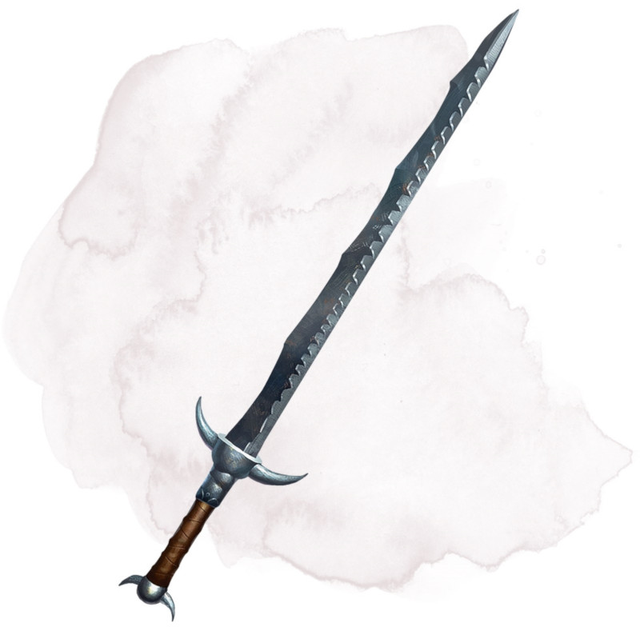

Épée acérée
Arme (toute épée qui inflige des dégâts tranchants), très rare (nécessite un lien)
Lorsque vous attaquez un objet avec cette épée magique et le touchez, les dés de dégâts de votre arme sont maximisés contre cette cible.
Lorsque vous attaquez une créature avec cette épée et obtenez un 20 naturel à votre jet d'attaque, la cible subit 14 dégâts tranchants supplémentaires. Puis lancez un autre d20. Si vous obtenez de nouveau un 20 naturel, vous amputez la cible de l'un de ses membres, l'effet d'une telle perte est déterminé par le MD. Si la créature ne possède aucun membre à sectionner, vous tranchez une portion de son corps à la place.
De plus, vous pouvez prononcer le mot de commande de la lame pour qu'elle émette une lumière vive dans un rayon de 3 mètres et une lumière faible sur 3 mètres supplémentaires. Répétez le mot de commande ou rengainez l'épée pour éteindre la lumière.
Lorsque vous attaquez une créature avec cette épée et obtenez un 20 naturel à votre jet d'attaque, la cible subit 14 dégâts tranchants supplémentaires. Puis lancez un autre d20. Si vous obtenez de nouveau un 20 naturel, vous amputez la cible de l'un de ses membres, l'effet d'une telle perte est déterminé par le MD. Si la créature ne possède aucun membre à sectionner, vous tranchez une portion de son corps à la place.
De plus, vous pouvez prononcer le mot de commande de la lame pour qu'elle émette une lumière vive dans un rayon de 3 mètres et une lumière faible sur 3 mètres supplémentaires. Répétez le mot de commande ou rengainez l'épée pour éteindre la lumière.
Dungeon Master´s Guide (SRD)
